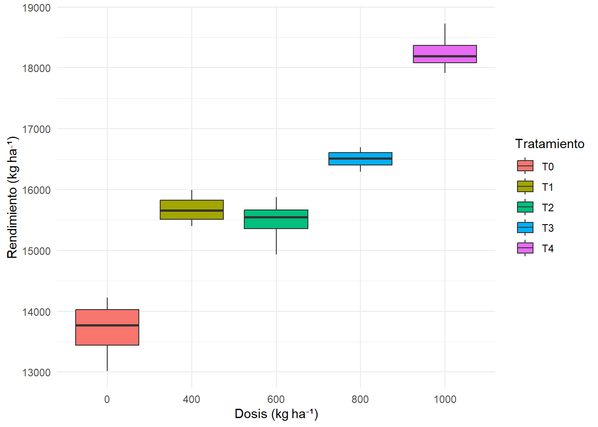

Cargando paquete requerido: carData
Adjuntando el paquete: 'car'
The following object is masked from 'package:dplyr':
recode
The following object is masked from 'package:purrr':
some
library(janitor)
Warning: package 'janitor' was built under R version 4.5.2
Adjuntando el paquete: 'janitor'
The following objects are masked from 'package:stats':
chisq.test, fisher.test
library(broom)library(rstatix)
Adjuntando el paquete: 'rstatix'
The following object is masked from 'package:janitor':
make_clean_names
The following object is masked from 'package:stats':
filter
library(ggpubr)library(performance)
Warning: package 'performance' was built under R version 4.5.2
library(emmeans)
Welcome to emmeans.
Caution: You lose important information if you filter this package's results.
See '? untidy'
Con la base de datos fb hacer un grafico boxplot donde en el eje x incluir niveles de dosis agrupados por trat para la variable rendimiento_kg_ha
ggplot(fb, aes(x =factor(dosis_kg_ha), y = rendimiento_kg_ha, fill = trat)) +geom_boxplot(position =position_dodge(width =0.8)) +labs(x ="Dosis (kg ha⁻¹)", y ="Rendimiento (kg ha⁻¹)", fill ="Tratamiento") +theme_minimal()

ANOVA diam_bulbo_cm
Hacer el análisis de variancia y mostrame la tabla de ANOVA para la variable diam_bulbo_cm en un diseño en bloques completos al azar para la interacción de los factores: trat y dosis_kg_ha
model_diam <-aov(diam_bulbo_cm ~ rendimiento_kg_ha * dosis_kg_ha +Error(bloque/(rendimiento_kg_ha*dosis_kg_ha)), data = fb)summary(model_diam)
Error: bloque
Df Sum Sq Mean Sq F value Pr(>F)
rendimiento_kg_ha 1 0.007543 0.007543 0.333 0.667
rendimiento_kg_ha:dosis_kg_ha 1 0.009942 0.009942 0.439 0.627
Residuals 1 0.022650 0.022650
Error: bloque:rendimiento_kg_ha
Df Sum Sq Mean Sq F value Pr(>F)
rendimiento_kg_ha 1 1.0785 1.0785 585.539 0.0263 *
dosis_kg_ha 1 0.0031 0.0031 1.658 0.4204
rendimiento_kg_ha:dosis_kg_ha 1 0.0002 0.0002 0.090 0.8141
Residuals 1 0.0018 0.0018
---
Signif. codes: 0 '***' 0.001 '**' 0.01 '*' 0.05 '.' 0.1 ' ' 1
Error: bloque:dosis_kg_ha
Df Sum Sq Mean Sq F value Pr(>F)
dosis_kg_ha 1 0.26377 0.26377 19.734 0.0471 *
rendimiento_kg_ha:dosis_kg_ha 1 0.00099 0.00099 0.074 0.8112
Residuals 2 0.02673 0.01337
---
Signif. codes: 0 '***' 0.001 '**' 0.01 '*' 0.05 '.' 0.1 ' ' 1
Error: bloque:rendimiento_kg_ha:dosis_kg_ha
Df Sum Sq Mean Sq F value Pr(>F)
rendimiento_kg_ha:dosis_kg_ha 1 0.08794 0.08794 84.99 0.0027 **
Residuals 3 0.00310 0.00103
---
Signif. codes: 0 '***' 0.001 '**' 0.01 '*' 0.05 '.' 0.1 ' ' 1
Error: Within
Df Sum Sq Mean Sq F value Pr(>F)
Residuals 4 0.01369 0.003423
Del modelo hacer la comparación de medias usando el paquete emmeans y colocar las letras de significancia estadistica
library(emmeans)library(multcompView)library(dplyr)# emmeans de la interacciónemm <-emmeans(model_diam, ~ rendimiento_kg_ha:dosis_kg_ha)
Warning in mth(object, trms, xlev, grid, ...): Some predictors are correlated
with the intercept - results may be very biased
NOTE: Results are based on intra-block estimates and are biased.
# comparaciones por pares con ajuste Tukeypairs <-contrast(emm, method ="pairwise", adjust ="tukey")pw <-summary(pairs)$p.valuenames(pw) <-summary(pairs)$contrast # e.g. "15921:560 - 15921:400"